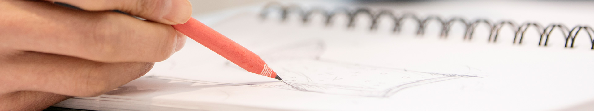
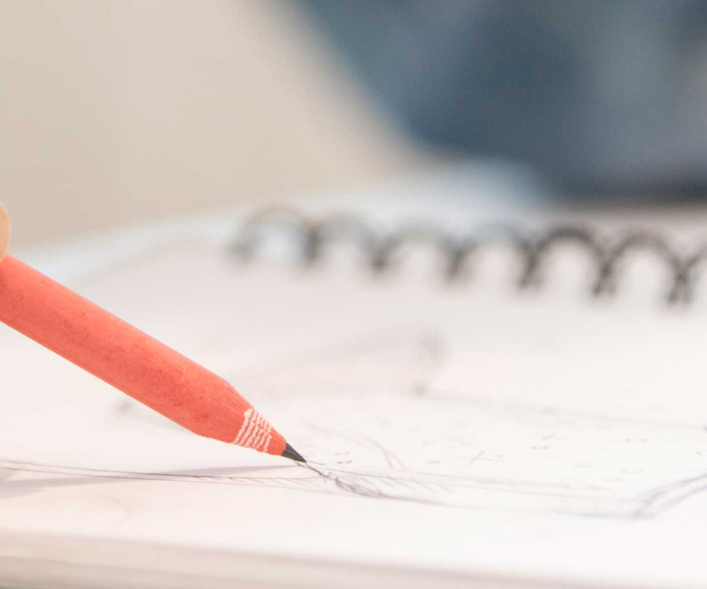
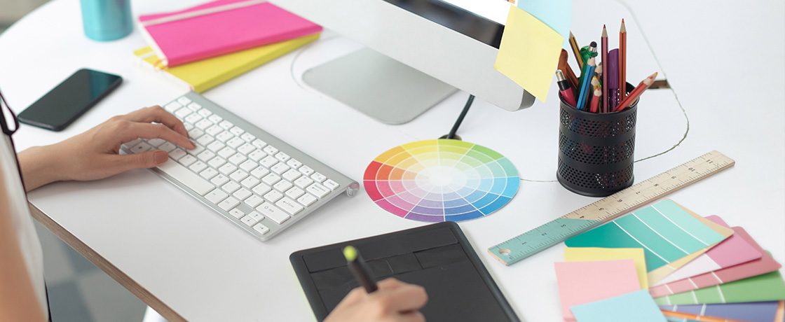

패키지연구
제품 포장을 설계하고 디자인하여 품질 유지와 아이덴티티 강화를 이룹니다.
-
포장
제품의 품질을 안정적으로 유지하기 위한 포장 기술을 연구하고 패키지를 개발합니다. 각 제품별로 적합한 소재와 형태를 검토하고 생산 및 유통 단계까지 고려하여 포장재를 설계하고 있습니다. 이로써 효과적인 패키징 타입이 제품에 안정적으로 적용될 수 있도록 합니다. 친환경 인쇄기술의 확보를 통해 포장재 생산 시 발생되는 VOCs(Volatile Organic Compounds)를 줄이고 잉크 절감, PET 경량화, 부산물 자원화 등의 시도를 이어오고 있으며 오감/점자 및 기능성 패키징을 통해 새로운 가치를 제공하는데도 주력하고 있습니다.
-

디자인
제품 용기의 외형 설계 및 모델링부터 라벨, BI, 시뮬레이션 이미지 등의 그래픽까지 소비자에게 시각적으로 어필할 수 있는 모든 부분에 대한 디자인을 책임집니다. 제품별 특성에 맞는 효과적인 디자인을 구현해낼 수 있도록 개발 및 마케팅을 비롯한 다양한 부서와의 협업을 통해 고유한 디자인 컨셉과 스토리를 창조합니다. 단순히 심미적인 부분만을 고려하는 것이 아니라 제품의 기획 의도와 특징, 친환경적 요소 등 기능적인 부분을 복합적으로 고려해 하나의 제품을 최종적으로 완성시키는 데 다양한 가치를 부여하는 역할을 수행하고 있습니다.